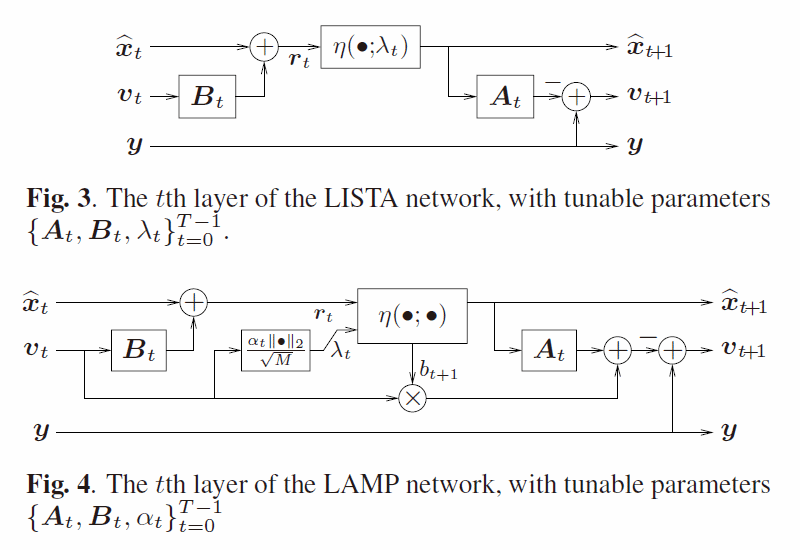

Notes on Jul. 20, 2018
| Date: | Jul 20, 2018 |
|---|---|
| Last Updated: | Aug 10, 2018 |
| Categories: | |
| Tags: |

Contents
Introduction
Here we would like to discuss about the some papers using deep learning methods to enhance the performance of the traditional inverse problems. The application should be limited in analyzing the electromagnetic wave or acoustic signal. Some works just make the application of existing methods, some works propose fundamental theory and some works give us an inspiration of available architectures. According to the relevance, we would like to divide them into 3 groups.
- Fully relevant: Highly relevant to our topic and for the same application, but may be out of date.
- Topic relevant: Highly relevant to our topic, but the application is different.
- Referable: Not very relevant to out topic, but providing valuable information.
Text
Fully relevant
Three-dimensional defect inversion from magnetic flux leakage signals using iterative neural network
- Title: Three-dimensional defect inversion from magnetic flux leakage signals using iterative neural network
- Author: Junjie Chen, Songling Huang, and Wei Zhao
- Year: 2015
- Theory level: application
- Theory type: network architecture: ANN
- Used data: The magnetic flux leakage (MFL) signal
- Predicted data: The shape of a 3D defect profile
- Source: IET Science, Measurement & Technology
Learning abstract:
In this paper, the author uses a 3 layer radial basis function (RBF) ANN to simulate the forward model of the EM response from a defect profile. Different from the normal ANN, the layer of RBF ANN is defined by two parts: denote $\mathbf{x}$ as the input, $\mathbf{y}$ as the output, the $j^{\mathrm{th}}$ element of the hidden layer $\mathbf{h}$ could be defined as
And the output layer is
Thus we know that RBF is an adaptation for the hidden layer. The optimization of this work could be figured as below:
Geoacoustic model inversion with artificial neural networks
- Title: Geoacoustic model inversion with artificial neural networks
- Author: J. Benson, N.R. Chapman, and A. Antoniou
- Year: 1998
- Theory level: application
- Theory type: network architecture: ANN
- Used data: acoustic signal
- Predicted data: geophysical parameters
- Source: IEEE Symposium on Advances in Digital Filtering and Signal Processing. Symposium Proceedings
Learning abstract:
In this paper, the author use a vertical line of receivers to get the reflected acoustic signal in the ocean. By analyzing the received signal, we try to get some parameters like the boundary between the geophysical surfaces, the density of the material, the signal speed and some other results. The experiments are shown in the following figure.
Both the traditional MLP (ANN) and RBF ANN are used to simulate the inversion of the model. The ANN contains 104 hidden nodes while RBF contains 1200 hidden nodes. The results show that RBF could reach a better result. However, the MSE is only improved marginally by RBF (8.88->8.35).
Electromagnetic NDE signal inversion by function-approximation neural networks
- Title: Electromagnetic NDE signal inversion by function-approximation neural networks
- Author: P. Ramuhalli, L. Udpa, and S.S. Udpa
- Year: 2002
- Theory level: application
- Theory type: network architecture: ANN
- Used data: The magnetic flux leakage (MFL) signal
- Predicted data: The shape of an 1D defect profile
- Source: IEEE Transactions on Magnetics
Learning abstract:
The idea of this work is almost exactly the same as this one. It seems that the paper in 2015 is just a reproduction of this work (in 2002) in the 3D data field.
Note that in this paper, the author also proposes another model, Wavelet-Basis Function Neural Networks(WBF ANN), which could be figured as
The layer in WBF ANN could be defined as
where we use $k$ to represent the output value with different offsets of the same scaling/wavelet function, $l$ represent the resolution stage (where $L$ is the the coarsest one) and $n$ to represent the $n^\mathrm{th}$ output value. $\phi$ is the scaling function and the $\psi$ is the wavelet function. The results show that compared to MLP ANN and RBF ANN, the WBF ANN has the best performance.
Deep Learning for the Design of Nano-photonic Structures
- Title: Deep Learning for the Design of Nano-photonic Structures
- Author: Itzik Malkiel, Michael Mrejen, Achiya Nagler, Uri Arieli, Lior Wolf, and Haim Suchowski
- Year: 2018
- Theory level: application
- Theory type: network architecture: Deep ANN
- Used data: spectrum signal
- Predicted data: nano-photonic structure parameters
- Source: IEEE International Conference on Computational Photography
Learning abstract:
The issue of this work is based on the inspection of optical response transmitted through a nano-photonic material. The author assume that the basic structure of this kind of material could be described by 5 units with a sub-wavelength geometry. Here is the network structure.
(A) shows that the network accept the transmitted spectrum in both directions and the material's geometries. Then it would predict the nano-structure's geometries $\mathbf{g}$. The output geometries would also be used to reconstruct the spectrums $\mathbf{s}_x$, $\mathbf{s}_y$ (also in both directions) so that it could be updated by the reconstruction gradients and the supervised gradients. The loss function could be written as:
where we use $\mathbf{g}_0,~\mathbf{s}_{x0}$ and $\mathbf{s}_{y0}$ to represent the ground truth.
(B) and (C) are two examples of the testing results. In the southwest corner we show the true and predicted geometry. The curves are reconstructed spectrum, which is an estimation of the accuracy of the prediction.
Comparison of Detection Abilities Between Fluxgate and GMR Magnetometer in Inverse ECT of Deep Lying Cracks
- Title: Comparison of Detection Abilities Between Fluxgate and GMR Magnetometer in Inverse ECT of Deep Lying Cracks
- Author: Lukas Behun, Milan Smetana, and Klara Capova
- Year: 2018
- Theory level: application
- Theory type: network architecture: ANN
- Used data: The magnetic measurements
- Predicted data: The shape parameters of defect
- Source: ELEKTRO CONFERENCE PROCEEDINGS
Learning abstract:
In this work, the author use a coil to generate eddy currents on the surface of a sample. Such currents would stimulate a magnetic field, which would be captured by another coil. In practice, the receiver could be viewed as a magnetometer. By analyzing the response returned from the magnetometer, we could infer the parameters (width, length and depth) of the shape of the cracks on the surface.

The collected data would be decomposed by Haar wavelet, then the changes of the gradient of electric scalar potential could be analyzed by the artificial neural network (ANN) which accepts the decomposed data and predict the results like segmentation. By checking the region that is tagged by "gradient change" we could find the shape of the cracks.
A Neural Network Approach for the Inversion of Multi-Scale Roughness Parameters and Soil Moisture
- Title: A Neural Network Approach for the Inversion of Multi-Scale Roughness Parameters and Soil Moisture
- Author: L.B. Farah, I.R. Farah, R. Bennaceur, Z. Belhadj, and M.R. Boussema
- Year: 2006
- Theory level: application
- Theory type: network architecture: ANN
- Used data: The radar backscattering coefficients
- Predicted data: The shape coefficients and conductivity
- Source: International Conference on Information & Communication Technologies
Learning abstract:
This work is an inspection on the surface of a material (actually is the soil). The author build a mathematical wavelet model and use a random process as the parameters of the model to describe the shape of the 2D interface. The parameters of the process, i.e. $\gamma,~\nu$ are used to describe the stationary part of the self autocorrelation that model. Apart from this, $\varepsilon$ represents the conductivity of the soil. Each of these parameters vary from different directions ($x$ and $y$ directions).
Then the radar backscattering coefficient is used to analyze this material. By using different incept angle, we could record different coefficients $\sigma(\theta)$ in two direction (horizontal and vertical). These values are feed into a 4-layer neural network so that it could predict the model parameters discussed before. The error rate of the prediction is about 8%.
Topic relevant
Scaling CNNs for High Resolution Volumetric Reconstruction from a Single Image
- Title: Scaling CNNs for High Resolution Volumetric Reconstruction from a Single
- Author: Adrian Johnston, Ravi Garg, Gustavo Carneiro, and Ian Reid
- Year: 2017
- Theory level: application
- Theory type: network architecture: residual
- Used data: RGB image
- Predicted data: 3D reconstructed model
- Source: 2017 IEEE International Conference on Computer Vision Workshops
Learning abstract:
In this work the authors use a real forward function (iDCT) to replace the decoder part of the auto-encoder. Note that because the forward function here is simple, it should be compatible to be built by basic tensor ops. Therefore, in this work we do not need to define the gradient back propagated from iDCT specifically. The encoder is a residual network and the defined decoder could reach a better performance than the deep learning decoder.
Tradeoffs Between Convergence Speed and Reconstruction Accuracy in Inverse Problems
- Title: Tradeoffs Between Convergence Speed and Reconstruction Accuracy in Inverse Problems
- Author: Raja Giryes, Yonina C. Eldar, Alex M. Bronstein, and Guillermo Sapiro
- Year: 2018
- Theory level: fundamental
- Theory type: pure optimization issue
- Used data: Gray scale image (patched as vectors)
- Predicted data: DCT transformed patches
- Source: IEEE TRANSACTIONS ON SIGNAL PROCESSING
- External Reference: check this link to learn theory about projected gradient algorithm (PGD). Note that PGD is difficult to be realized well in tensorflow due to the slow convergent rate.
Learning abstract:
The authors introduce three baseline methods including iterative shrinkage-thresholding algorithm (ISTA), learned ISTA (LISTA) and projected gradient algorithm (PGD). Then they propose a new method named inexact projected gradient descent algorithm (IPGD). The problem they need to solve is, assuming that we have known $\mathbf{M}$ and response $\mathbf{y}$, we need to get
where $f$ is a regularization function. The ISTA is based on proximal optimization on the primal gradient. The PGD is based on orthogonal projection on the primal gradient. The iPGD uses a tree structure to improve the efficiency of PGD. Note that the author also introduces a learning-based method, i.e. LISTA, which uses a neural network to learn two matrices $\mathbf{U},~\mathbf{A}$ and updates the arguments by
where $\mathbf{z}_t$ is the optimized arguments by $t$ iterations and $\mathrm{prox}$ is the proximal operator which could be referred here.
Onsager-corrected deep learning for sparse linear inverse problems
- Title: Onsager-corrected deep learning for sparse linear inverse problems
- Author: Mark Borgerding, and Philip Schniter
- Year: 2016
- Theory level: fundamental
- Theory type: deep learning & optimization
- Used data: randomly generated data
- Predicted data: randomly generated data
- Source: IEEE Global Conference on Signal and Information Processing
- External Reference: check this link to see the implementation of proximal Adgrad in tensorflow.
- External Reference: check this link to see the theory of learning ISTA (LISTA).
Learning abstract:
The authors introduce four baseline methods including iterative shrinkage-thresholding algorithm (ISTA), fast ISTA (FISTA), learned ISTA (LISTA) and approximate message passing (AMP) algorithm. Then they propose a new method, learned AMP (LAMP). The idea is implementing the idea from LISTA to AMP. The problem is almost the same as what we discussed in $\eqref{top:Giryes:1}$
The basic idea of AMP could be formulated as
Like what we do in LISTA, migrating to LAMP needs us to make some above parameters adjustable. Thus we define $\mathbf{A}_t = \beta_t \mathbf{M}$ and $\mathbf{B}_t = \mathbf{M}^H \mathbf{C}_t$. Then what could adjust is $\{\alpha_t, \beta_t, \mathbf{C}_t\}$, where $t$ is the step number of AMP but here is the layer number of the network. The following figure show the basic architecture of one layer of the network. The experiments show that the layer of the network could be much fewer than the step number of the primal inversion.

DAGAN Deep De-Aliasing Generative Adversarial Networks for Fast Compressed Sensing MRI Reconstruction
- Title: DAGAN Deep De-Aliasing Generative Adversarial Networks for Fast Compressed Sensing MRI Reconstruction
- Author: Guang Yang, Simiao Yu, Hao Dong, Greg Slabaugh, Pier Luigi Dragotti, Xujiong Ye , Fangde Liu, Simon Arridge, Jennifer Keegan, Yike Guo, and David Firmin
- Year: 2018
- Theory level: application
- Theory type: network architecture: GAN
- Used data: compressed magnetic resonance imaging (CS-MRI) data
- Predicted data: original MRI data
- Source: IEEE Transactions on Medical Imaging
- External Reference: check this link to see the theory about conditional GAN.
- External Reference: check this link to see a similar theory applied in image super-resolution, which is a more famous work.
Learning abstract:
Denote the original image (reshaped as a vector with a length of $M$) as $\mathbf{x}$, its corresponding compressed image is $\mathbf{y}$ ($\mathbf{y}$ has a length of $N$ which fulfils $N \ll M$). Then when we only know $\mathbf{y}$, we could use a series of basis (as a matrix $\mathbf{F}_u$ with a size of $N \times M$) to recover $\mathbf{x}$ from $\mathbf{y}$ by
Where $f$ is a function about regularization. This is a conventional inversion method.
To replace this process, the authors propose a deep network to predict $\mathbf{x}$. First, we use the transposed basis to get a initialized prediction $\mathbf{x}_u$:
Then we use a generic network to get a residual $G(\mathbf{x})_u$. The desired result would be formulated as $\hat{\mathbf{x}} = \mathbf{x}_u + G(\mathbf{x}_u)$. To make sure the prediction could be precise and in detail, we use a loss function with 4 parts to train the network: (1) pixel-wise MSE loss, (2) spectral-element-wise MSE loss, (3) a VGG-output loss that is used to estimate the difference between the prediction and the ground truth, (4) discriminative loss produced by GAN. In special, (4) involves a discriminator which is used to tell the difference between the ground truth $\mathbf{x}_t$ and the predicted result $\hat{\mathbf{x}}$. This idea comes from conditional GAN that need us to let the discriminator could not tell the difference when giving a pair of ground truth and the prediction.
Referable
Using Deep Neural Networks for Inverse Problems in Imaging
- Title: Using Deep Neural Networks for Inverse Problems in Imaging
- Author: Alice Lucas, Michael Iliadis, Rafael Molina, and Aggelos K. Katsaggelos
- Year: 2018
- Theory level: introductory
- Theory type: network architecture: GAN
- Used data: no
- Source: IEEE Signal Processing Magazine
Learning abstract:
An introductory paper that discusses several kinds of deep networks used in data-driven simulating for the image inversion. It has discussed the conventional CNN, the residual block and the auto-encoder. Beside these, note that the GAN has been an important part. It has discussed how GAN improves the performance in detail.
Estimate articulatory MRI series from acoustic signal using deep architecture
- Title: Estimate articulatory MRI series from acoustic signal using deep architecture
- Author: Hao Li, Jianhua Tao, Minghao Yang and Bin Liu
- Year: 2015
- Theory level: application
- Theory type: network architecture: RBM or DBN
- Used data: speech audio signal
- Predicted data: magnetic resonance imaging (MRI)
- Source: IEEE International Conference on Acoustics, Speech and Signal Processing
- External Reference: check this link to learn implementation about restricted Boltzmann machine (RBM).
Learning abstract:
The author assumes the relationship exists between the MRI images and the speaking signal. To predict the images, the author trains a deep belief network (DBN, also viewed as stacked restricted Boltzmann machine (RBM)) to make the regression. The network architecture and the results are shown below:
(I) is the architecture. Here are n stacked RBMs and a linear regression layer ($h_{n+1}$). Then the linear layer would be mapped into another RBM which is also the output layer. Note that each two layers are fully connected, but the network is trained by each layer individually first and gets fine-tunned finally.
(II) is the prediction compared to the ground truth. We could tell difference for different speaking tones from the results.
(III) is estimation of using different number of hidden units. It shows that the performance would not be improved apparently with increasing the network size.